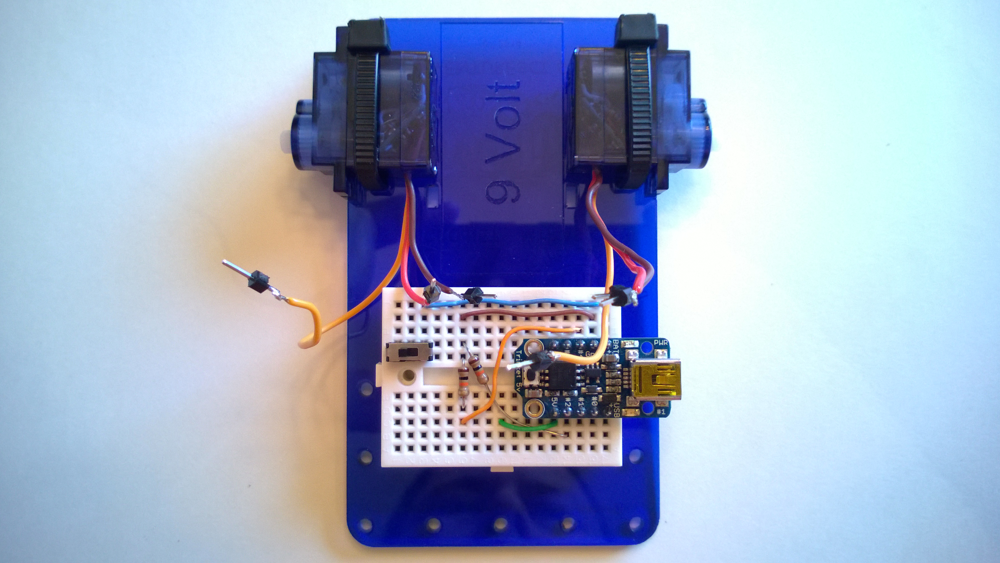
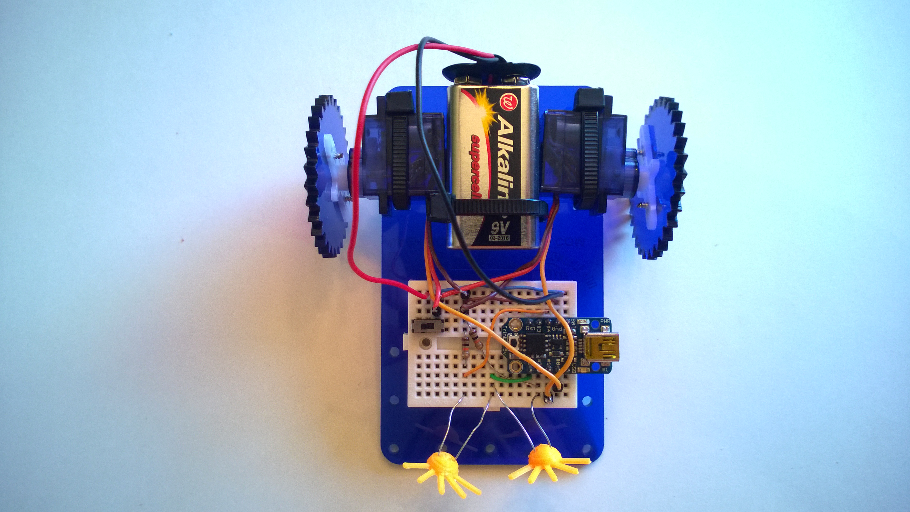

Assembling the Kit
Step #0: Examine the kit.
Make sure you have all the parts...
Step #1: Remove the protective paper from the acrylic body.
Peel as much of the large pieces off with your fingers as you can. For the small pieces remaining, it works well to rub them off using a soft cloth or cotton ball soaked in alcohol.

Step #2: Attach the breadboard.
Peel the paper off the back of the breadboard to expose the tape then stick it to the top side of the acrylic as shown.

Step #3: Prepare to solder the headers to the Trinket.
We will be soldering the male headers to the Trinket next. The breadboard makes a great tool for holding everything in place during this process. Insert the long end of the 5-pin male headers into the breadboard as shown.

Step #4: Place the Trinket on the headers.
Place the Trinket on the headers as shown. There should be a pin in every hole. Push the Trinket down gently to make sure everything is sitting square and flat.
Step #5: Solder the headers to the Trinket.
Carefully solder the headers to the Trinket. Be careful not to hold the iron on the PCB too long. For help with soldering go here.

Step #6: Add a 10k Ohm resistor (brown, black, orange stripes) between (6, 4) and (6, 6).
It helps to bend both resistor wires down at the right length first. You may also want to trim them with wire cutters so that the resistor doesn't stand high above the breadboard.

Step #7: Lorum ipsum...
Explain this step here...

Step #8: Lorum ipsum...
Explain this step here...
Step #9: Lorum ipsum...
Explain this step here...
Step #10: Lorum ipsum...
Explain this step here...
Step #11: Lorum ipsum...
Explain this step here...
Step #12: Lorum ipsum...
Explain this step here...
Step #13: Lorum ipsum...
Explain this step here...
Step #14: Lorum ipsum...
Explain this step here...
Step #15: Lorum ipsum...
Explain this step here...
Step #16: Lorum ipsum...
Explain this step here...

Step #17: Lorum ipsum...
Explain this step here...
Step #18: Lorum ipsum...
Explain this step here...
Step #19: Lorum ipsum...
Explain this step here...
Step #20: Lorum ipsum...
Explain this step here...
Step #21: Lorum ipsum...
Explain this step here...
Step #22: Lorum ipsum...
Explain this step here...
Step #23: Lorum ipsum...
Explain this step here...
Step #24: Lorum ipsum...
Explain this step here...

Step #25: Lorum ipsum...
Explain this step here...
Step #26: Lorum ipsum...
Explain this step here...
Step #27: Lorum ipsum...
Explain this step here...
Step #28: Lorum ipsum...
Explain this step here...
Step #29: Lorum ipsum...
Explain this step here...
Step #30: Lorum ipsum...
Explain this step here...
Step #31: Lorum ipsum...
Explain this step here...

Step #32: Lorum ipsum...
Explain this step here...

Step #33: Lorum ipsum...
Explain this step here...

Step #34: Turn it on and have fun!
Explain this step here...